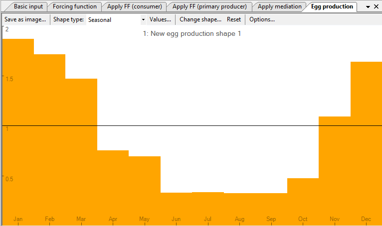
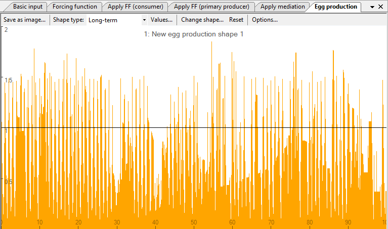
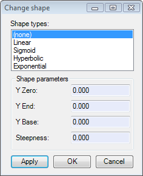
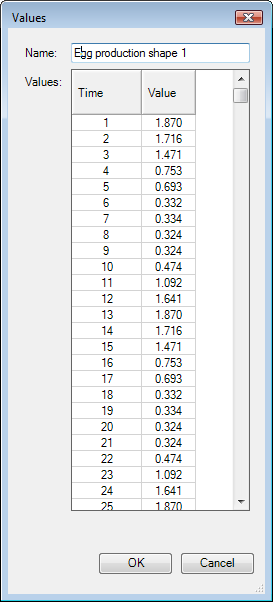

This linkage thus allows simulating the effect of abiotic variables, such as, e.g., the effect of wind-induced offshore transport of Peruvian anchoveta, a process which removes eggs/larvae from the (coast-bound) population independently of the density of their food organisms, or of their predators (Mendelssohn, 1989).
Moreover, by shifting the peak(s) of such forcing function relative to the peak(s) of a forcing function for seasonal production of phyto- and/or zooplankton, the match/mismatch hypothesis of Cushing (1975), and related hypotheses, can be tested in an ecosystem context: something previously not achievable.
To link a multi-stanza group with a seasonally oscillating or long-term forcing function, go to the Egg production form (Time dynamic (Ecosim) > Input > Egg production). Note you must have an Ecosim scenario loaded before you can open the Egg production form. You must also have multi-stanza groups defined in your Ecopath model to be able to use this form.
Important note: after you have defined the egg production shape(s) as described below you must continue to the Apply egg production form to define the multi-stanza group(s) affected by the egg production function(s).
When you open the Egg production form for the first time, there will be no egg production shapes.
To define an egg production shape, click Add.... Use the Shape type menu at the top of the form to set whether the function is long-term (occurs over a number of years) or seasonal (repeating over a 12 month period). The x-axis of the yellow sketch pad will change accordingly.
You can then define egg production shapes in one of two ways:
1. Shapes can be drawn freehand using the yellow sketch pad. If you have selected a Seasonal shape, the x-axis will appear as the months January to December and your sketch will be drawn in monthly blocks (Figure 8.20a). If you have selected a long-term shape, the x-axis will be shown as the annual time steps of the model. The sketch will be smooth (Figure 8.20b). You will see your sketched shape transferred to the selected shape in the bottom pane;
2. Alternatively, you can use standard mathematical shapes. Click Change shape … at the top of the form to open the Change shape dialogue box. Select a shape type (e.g., linear, sigmoid, exponential) from the menu in the window. You can tailor the shape to your specific requirements by setting the Y Zero, Y End, Y Base and Steepness parameters (where appropriate) in the cells provided.
Clicking the Save as image … button at the top of the form opens a dialogue box prompting you to save the current trophic mediation shape to a bitmap file (.bmp). Use this dialogue box to name the file and browse for a location to save it.
Select whether the selected shape is a seasonal or long-term egg production shape.
Displays the values of the current egg production shape.
See point 2 above.
Resets the current egg production or seasonal shape to the default constant value of 1.0.
Opens the Graph display options dialogue box. Set the way the egg production shape is displayed in the main window of the Egg production function form.
There are four additional menu items on the bottom pane of the Egg production function form that allow you add, copy, rename and delete egg production or seasonal shapes.
Adds an extra blank long-term egg production shape. If necessary, use Shape type to change the long-term egg production shape to a seasonal shape.
Copies the currently-selected shape.
Removes the currently-selected shape. A warning that shape-deletion cannot be undone will appear. Click Yes to remove the shape.
Rename the currently-selected shape by selecting Rename. You will then be able to type in a new name for the shape.


Fig 8.20 Examples of a) a seasonal egg production function and b) a long-term (annual) egg production function. Note that in the long-term series, egg production is still resolved on a monthly basis.

Figure 8.21 The Change shape dialogue box.

Figure 8.22 The Values dialogue box.